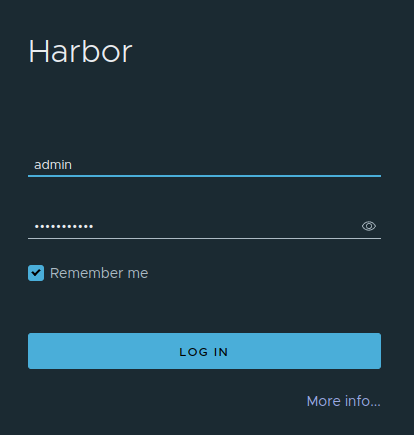
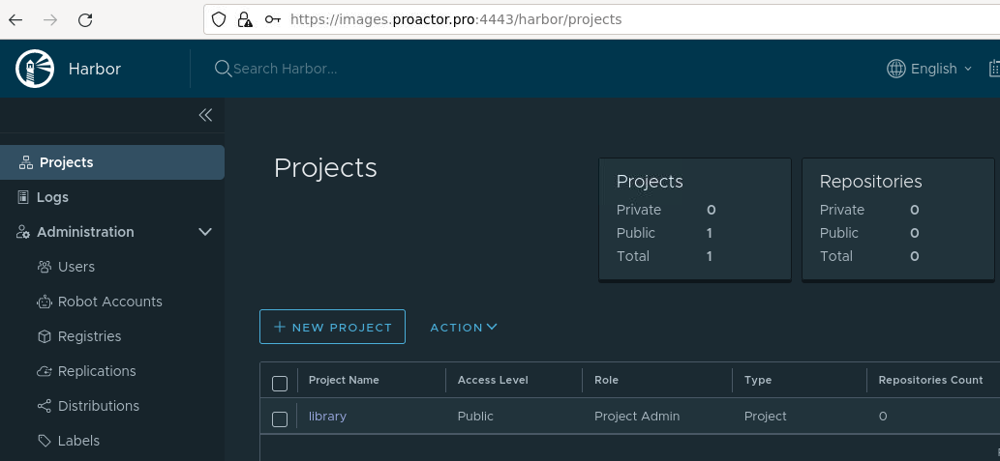

BRIX Enterprise can be installed in a closed environment with no direct access to an external container image repository. To achieve this, you need to pre-install a private registry, such as Harbor.
The installation of the Harbor private repository involves four steps:
- Install docker and docker-compose on your OS.
- Download the online installer archive.
- Fill in the configuration file.
- Install Harbor.
Step 1: Install docker and docker-compose
Install Docker and Docker Compose for your operating system.
Step 2: Download the online installer archive
- На On a computer with internet access, go to the Harbor releases page and download the
harbor-offline-installer-vX.Y.Z.tgzarchive by executing the following command:
wget https://github.com/goharbor/harbor/releases/download/vX.Y.Z/harbor-offline-installer-vX.Y.Z.tgz
- Copy the obtained archive to the server where the installation will take place.
- Unpack the archive on the server and copy the default configuration file
harbor.yml.tmpl в harbor.yml:
tar xzvf harbor-offline-installer-vX.Y.Z.tgz && cd harbor
cp harbor.yml.tmpl harbor.yml
Step 3: Fill in the configuration file harbor.yml
- Fill in the variables in the
harbor.ymlfile.
Set the domain (FQDN) or IP address in the hostname parameter, through which the registry will be accessible, for example, set the domain name registry.example.com.
- Determine the protocols through which the repository will be accessible.
Начало внимание
If the registry should only be accessible via the HTTP protocol, comment out the parameters in the HTTPS section and set the trivy.insecure parameter to true.
Конец внимание
In this article, the repository will be accessible via the HTTPS protocol, with redirection from HTTP to HTTPS.
Port numbers for parameters http.port and https.port:
- 80 for HTTP;
- 443 for HTTPS.
Specify the path to the open certificate file in the https.certificate parameter, and in https.private_key specify the path to the private key file.
- Set the password for the admin user in parameter
harbor_admin_password. If necessary, change the path to the directory where the images will be stored in thedata_volumeparameter.
Example of filling in configuration file parameters for installation within the article's scope
# Configuration file of Harbor |
- Configure other parameters according to your security policy and expected load.
Step 4: Install Harbor
- Install Harbor by executing the following command:
sudo ./install.sh
- Wait for the installation script to complete.
- Open a browser and go to the Harbor login page at http://hostname or https://hostname. The
hostnameparameter was specified during configuration file filling in theharbor.ymlconfguration file on the fill in the configuration file step.
In this example, the login page address for Harbor is https://registry.example.com.
- Log in with the username admin and the password set in the configuration file
harbor.ymlin theharbor_admin_passwordparameter.

- The Harbor projects page opens.

The Harbor private registry installation is complete.
Found a typo? Select it and press Ctrl+Enter to send us feedback